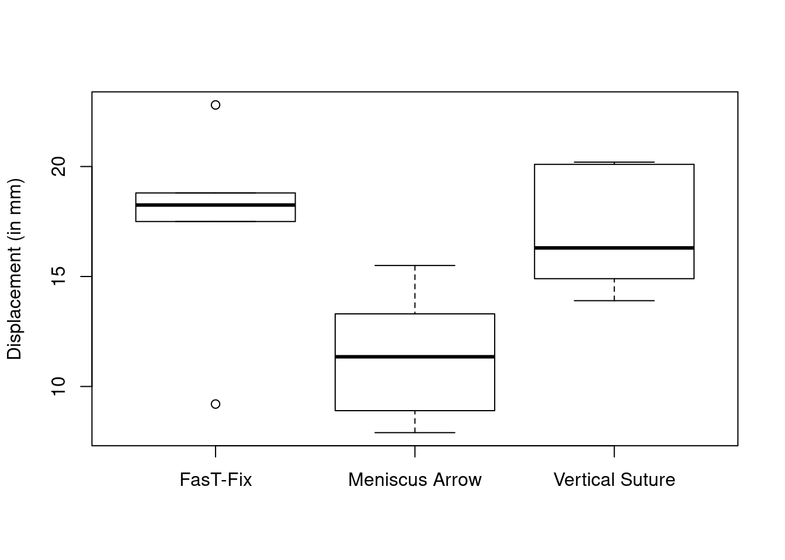

5.4 Solutions
5.4.1 Exercise 9.3 - One-way analysis of variance
In this example, the three groups have very different variances! We carry out the testing procedure simply to show you how it is done (this does not imply we should use it in practice).
options(show.signif.stars = FALSE)
#http://www.stat.ufl.edu/~winner/data/meniscus.txt
meniscus <- read.table("http://sma.epfl.ch/~lbelzile/math341/meniscus.dat", header = TRUE)
boxplot(displacement ~ method, data = meniscus, ylab = "Displacement (in mm)")
lmod_men <- lm(displacement ~ method, data = meniscus)
summ_men <- summary(lmod_men)
#ANOVA table
anov_men <- anova(lmod_men)
#F statistic with dof
summ_men$fstatistic## value numdf dendf
## 5.783689 2.000000 15.000000#P-value
anov_men[1,"Pr(>F)"]## [1] 0.01374261The \(F\) statistic for the null hypothesis \(\mu_1=\mu_2=\mu_3\) is 5.78 against the alternative that at least one group mean differ. Under the assumption of the Gaussian linear model, \(F\) follows a Fisher distribution with 2 and 15 degrees of freedom. The \(P\)-value is thus 0.01 and we therefore reject the null hypothesis that the treatment is equal at level \(\alpha = 0.05\).
The meniscus dat set is a balanced design, which implies that the number of observations is the same for each level of the factor. Since the entries of \(\mathbf{X}^\top\mathbf{X}\) depend on the counts for each level, they will be the same here. This implies that the standard errors are also identical for each level (except for the baseline, symbolized by the intercept). Removing the latter changes the parametrization from baseline and constrast to individual group mean.
summary(lmod_men2 <- lm(displacement ~ 0 + method, data = meniscus))##
## Call:
## lm(formula = displacement ~ 0 + method, data = meniscus)
##
## Residuals:
## Min 1Q Median 3Q Max
## -8.2667 -1.8500 0.2833 1.7708 5.3333
##
## Coefficients:
## Estimate Std. Error t value Pr(>|t|)
## methodFasT-Fix 17.467 1.403 12.454 0.00000000260
## methodMeniscus Arrow 11.383 1.403 8.116 0.00000072052
## methodVertical Suture 16.950 1.403 12.085 0.00000000392
##
## Residual standard error: 3.435 on 15 degrees of freedom
## Multiple R-squared: 0.9607, Adjusted R-squared: 0.9529
## F-statistic: 122.3 on 3 and 15 DF, p-value: 0.00000000009081crossprod(model.matrix(lmod_men2))## methodFasT-Fix methodMeniscus Arrow
## methodFasT-Fix 6 0
## methodMeniscus Arrow 0 6
## methodVertical Suture 0 0
## methodVertical Suture
## methodFasT-Fix 0
## methodMeniscus Arrow 0
## methodVertical Suture 6Note that the value of the multiple R-squared value is not the same, nor is the \(F\)-statistic. The residuals sum of square does not change because the adjustment is the same. However, without an intercept, R computes the decomposition \(\boldsymbol{y}^\top\boldsymbol{y} = \mathrm{RSS} + \boldsymbol{y}^\top\mathbf{H}_{\mathbf{X}}\boldsymbol{y}\) rather than \(\mathrm{TSS} = \boldsymbol{y}^\top\mathbf{M}_{\mathbf{1}_n}\boldsymbol{y}= \mathrm{ESS}+\mathrm{RSS}\). We have \(\mathrm{TSS} = \boldsymbol{y}^\top\boldsymbol{y}-n\bar{y}^2\).
We can compute the mean using the information on the total number of cases, since \(\bar{y} = (\hat{\mu}_1+\hat{\mu}_2 + \hat{\mu}_3)/3\).
5.4.2 Exercise 9.4 - Two-way analysis of variance
diet <- read.table("http://sma.epfl.ch/~lbelzile/math341/diet.dat", header = TRUE)
#Cast strings to factors
diet$diet.type <- as.factor(diet$diet.type)
diet$gender <- as.factor(diet$gender)
#Check mean and variance by combination of factor
#Warning: small sample sizes
facs <- list(diet$diet.type, diet$gender)
tapply(diet$weight.loss, facs, mean)## Female Male
## A -3.050000 -3.650000
## B -2.607143 -4.109091
## C -5.880000 -4.233333tapply(diet$weight.loss, facs, var)## Female Male
## A 4.264231 6.431667
## B 5.239176 6.376909
## C 3.570286 7.376970#Variance may not be homogeneous for men/women
#Fit model with interaction
M5 <- lm(weight.loss ~ gender * diet.type, data = diet)
M4 <- lm(weight.loss ~ gender + diet.type, data = diet)
M3 <- lm(weight.loss ~ diet.type, data = diet)
M2 <- lm(weight.loss ~ gender, data = diet)
M1 <- lm(weight.loss ~ 1, data = diet)
#ANOVA Tables (recall sequential decomposition) - prefered option
anova(M5)## Analysis of Variance Table
##
## Response: weight.loss
## Df Sum Sq Mean Sq F value Pr(>F)
## gender 1 0.28 0.2785 0.0518 0.820623
## diet.type 2 60.42 30.2086 5.6190 0.005456
## gender:diet.type 2 33.90 16.9520 3.1532 0.048842
## Residuals 70 376.33 5.3761#anova(M5) uses RSS from M5 in denominator, read table from bottom to top
#RSS values
RSS <- anova(M1, M2, M3, M4, M5)[,"RSS"]
#Backward model selection (more complex to simpler)
drop1(M5, test = "F")## Single term deletions
##
## Model:
## weight.loss ~ gender * diet.type
## Df Sum of Sq RSS AIC F value Pr(>F)
## <none> 376.33 133.58
## gender:diet.type 2 33.904 410.23 136.13 3.1532 0.04884#Manual calculation
F45 <- ((RSS[4]-RSS[5])/2)/(RSS[5]/M5$df.residual)For forward model selection, we select the covariate that is the most correlated with the response first. The residual sum of square of the denominator must be correct, so we could use that of the most complex model here.
anova(lm(weight.loss ~ gender * diet.type, data = diet))["gender", c("F value","Pr(>F)")] ## F value Pr(>F)
## gender 0.0518 0.8206#gender is not significant
anova(lm(weight.loss ~ diet.type * gender, data = diet))["diet.type", c("F value","Pr(>F)")] ## F value Pr(>F)
## diet.type 5.6292 0.005408#diet type is significant
#Alternatively - assume that the model is CORRECT
## Clearly not the case
add1(M1, scope = c("diet.type","gender"), test = "F")## Single term additions
##
## Model:
## weight.loss ~ 1
## Df Sum of Sq RSS AIC F value Pr(>F)
## <none> 470.93 140.62
## diet.type 2 60.527 410.40 134.17 5.3831 0.006596
## gender 1 0.278 470.65 142.58 0.0438 0.834827#manually computing F-test between diet.type + intercept and intercept only
isTRUE(all.equal(
((RSS[1]-RSS[3])/2)/(RSS[3]/(73)),
add1(M1, scope = c("diet.type","gender"), test = "F")["diet.type", "F value"]))## [1] TRUE#Note that in the above, the RSS is that of the more complex model, but not the full model
add1(M3, scope = "gender", test = "F")## Single term additions
##
## Model:
## weight.loss ~ diet.type
## Df Sum of Sq RSS AIC F value Pr(>F)
## <none> 410.40 134.17
## gender 1 0.1687 410.23 136.13 0.0296 0.8639#No evidence against the simpler null model with only diet
#We do not test for the interaction model without main effects included!We can use information criterion to estimate the goodness-of-fit of the model.
The Akaike’s information criterion (AIC) and Schwartz’ information criterion (BIC) can be obtained by use of the functions AIC and BIC, respectively.
An alternative is Mallow’s \(C_p\), which requires an estimate of \(s^2\). It is customary to select \(s^2\) as the mean residual sum of squares from the most complex model, to make the comparisons fair avoid bias to due model misspecification. The most complex model will by construction give \(C_p=p\) (so we cannot assess the goodness-of-fit of this model using this technique). Good models are those for which the value of \(C_p\) is close to \(p\).
p <- unlist(lapply(list(M1, M2, M3, M4, M5),
FUN = function(mod){length(coef(mod))}))
Mallow_Cp <- RSS/RSS[5]*(nrow(diet)-p[5]) - nrow(diet) + 2 * p
Mallow_Cp## [1] 13.596261 15.544461 6.337787 8.306409 6.000000#Step function for model selection using AIC/BIC
#step(M5, direction = 'backward',trace = FALSE, k = log(76))
#Alternatively, compute each AIC/BIC value
aic_val <- AIC(M1, M2, M3, M4, M5)
bic_val <- BIC(M1, M2, M3, M4, M5)
which.min(aic_val$AIC)## [1] 5which.min(bic_val$BIC)## [1] 3#Store values in table
ICvals <- rbind(aic_val$AIC, bic_val$BIC)
colnames(ICvals) <- paste0("M", seq(1:5))
rownames(ICvals) <- c("AIC", "BIC")
#Create table for Markdown
knitr::kable(round(ICvals,2))| M1 | M2 | M3 | M4 | M5 | |
|---|---|---|---|---|---|
| AIC | 358.30 | 360.26 | 351.85 | 353.81 | 351.26 |
| BIC | 362.96 | 367.25 | 361.17 | 365.47 | 367.57 |
#Create table to export in LaTeX
tab <- xtable::xtable(round(ICvals,1), caption = "Two-way ANOVA, diet data")
#print(tab, booktabs = TRUE)